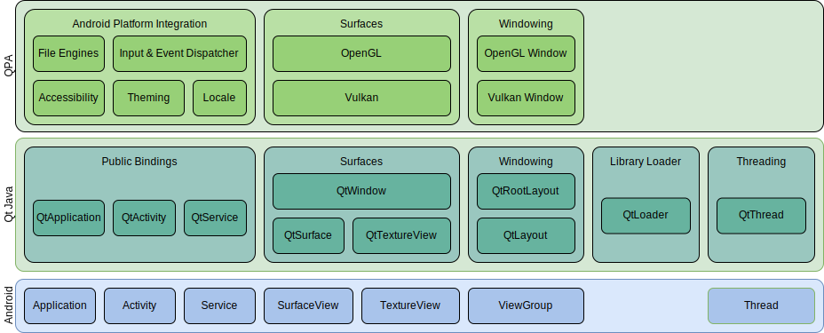

How Qt for Android Works
If you're a developer looking for a high-level overview of how Qt supports the Android platform, this page is for you.
Starting the Qt Application
Similar to native Android apps, Qt main Activity's onCreate() is called early on when the app is started and the Activity is created. That's where most of the initialization of the Android Qt Platform Abstraction (QPA) takes place. The most important parts are:
- Loading Qt and the main application's libraries.
- Initializing the delegates which takes care of initializing the rendering surfaces and the top level layout, as well as registering various listeners like input, display, touch handlers, among others.
When loading the Qt libraries, the JavaVM is cached while QtCore is first loaded. This is done under the JNI_OnLoad() function, which is called synchronously when a library is loaded using System.load() call. Every Qt module might have an implementation for this function to do some module-specific initialization, like registering native JNI methods.
Once all Qt modules libraries are loaded, Qt loads the Android QPA plugin and the main application library. After the top level QtLayout layout has finished inflating its content, the Qt application's main() handle is located and invoked. That will start the C++ Qt application and usually start the main event loop.
The Android QPA
The Android QPA is responsible for gluing the Android (Java/Kotlin) side with the native Qt (C++) side. It handles the various event and signal propagation both to and from Qt to Android. That responsibility spans signal handling, touch events, UI elements, and rendering, etc. This layer is also responsible for app startup initialization and cleanup upon app exit or destruction.
Threads
With Qt for Android apps, Qt usually has two threads of interest. The first is the QtThread that Qt starts. The second one is the Android UI thread.
QtThread
This thread is implemented and started by the Qt app first before, for example, loading the libraries. This thread is called qtMainLoopThread. All the following operations are executed under this thread:
- Qt library loading.
- Operations done inside JNI_OnLoad().
- Starting the native application.
- The execution of
main().
Android UI Thread
Similar to Android apps, operations that affect the UI are expected to run in the UI thread. Qt does that under the hood for any internal calls that are expected to run in the UI. Also, Qt offers an API QAndroidApplication::runOnAndroidMainThread to run operations under this thread from C++ code. Using this API, Qt manages when the calls are directly posted to the thread if the app is active, or queued if the app is paused or in the background.
Architecture

Qt Classes
These next sections go through the various Qt Android classes and their functionality and role in Qt applications.
The Public Java Bindings
These classes are public classes that wrap the internal implementation details of the user-facing classes like Activity, Service and Application. These classes are used by default for Qt Android apps and referred to in the Android manifest file. The build system and deployment tools take care of including them in the build.
Users can use these classes to change or extend the default behavior. For example, to add custom user-defined logic under onCreate(), use the following:
public class MyActivity extends QtActivity { @Override protected void onCreate(Bundle bundle) { // code before Qt is initialized super.onCreate(bundle); // code after Qt is initialized } }
Note: You must edit the AndroidManifest.xml file to use your custom Activity or binding class, otherwise, the default one will still be used.
Setting a Theme
When extending QtActivity, you can set a specific Android theme using setTheme(). However, that call must precede the call to the parent class's onCreate() for it to take effect since Qt sets the theme by default. For example, you can use:
@Override protected void onCreate(Bundle bundle) { setTheme(android.R.style.Theme_DeviceDefault_DayNight); super.onCreate(bubdle); }
By default, for Android 10 and later, Qt sets the theme Theme_DeviceDefault_DayNight Style, and Theme_Holo_Light Style for earlier versions.
Append an Application Parameter
To append an extra application parameter, that is an argument that's passed to the application's (main()) function from Java/Kotlin, you can do the following after extending QtActivity:
@Override protected void onCreate(Bundle bundle) { appendApplicationParameters("--flag value"); super.onCreate(bubdle); }
This is similar to using the CMake variable QT_ANDROID_APPLICATION_ARGUMENTS directly. Parameters passed using either method accept spaces or tabs as separators, and the final list of parameters passed to the application are parsed using QProcess::splitCommand.
Loading Qt Libraries with QtLoader
Every Qt Android app needs to ensure every native Qt or 3rd party library is first loaded before invoking any functionality from those modules. The build system keeps a list of various Qt library dependencies, the QPA plugin, the main app library, and any third-party library under the application's libs.xml resource file. Once all the prerequisite steps mentioned in the sections below are done, the libraries are loaded using System.load().
The Class Loader
The class loader object is set early on by the QtLoader before loading Qt libraries or initializing the delegates. This is because the class loader is used by QJniObject to find Java classes and is required to do any JNI call with QJniObject.
Setting Environment Variables and Application Parameters
Before loading the libraries, Qt has to ensure environment variables are passed as metadata in the Android manifest to set. This step enables the initialization of some modules based on the configuration flags set as manifest meta-data. Some of this meta-data is also propagated to the application parameters list that is passed to the application when it's started.
setActivity(), setContext() and setService()
Various Qt modules might need to do some initialization work from the Java side that requires having the context of the Activity or Service. Those modules then implement a static method that takes an Activity, Service or Context as a parameter:
void setActivity(Activity activity) { m_activity = activity; // Other logic }
Then, the QtLoader invokes these methods with the parent context of the loader just before loading the native shared libraries.
More About Qt for Android
The video from the 2021 Qt World Summit gives an overview of Qt for Android.

"A picture of an agenda that links to a YouTube video"